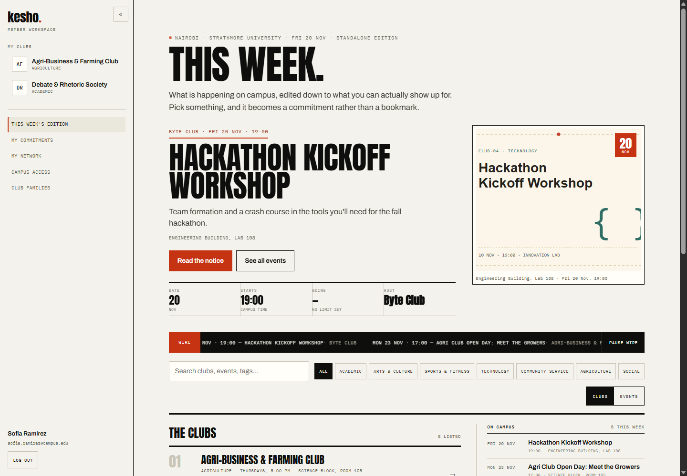
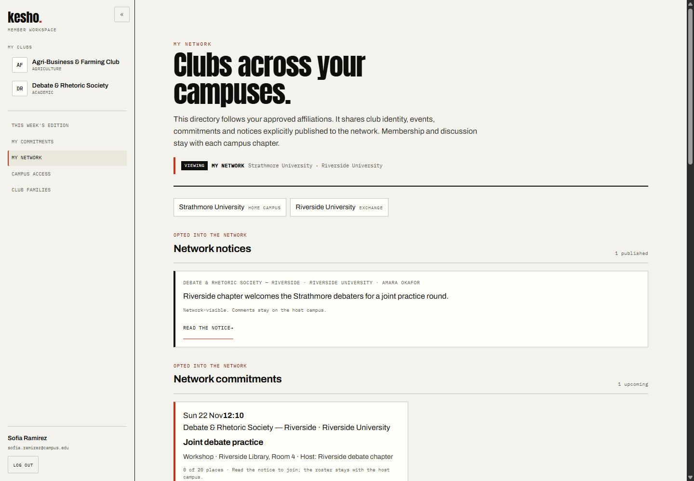
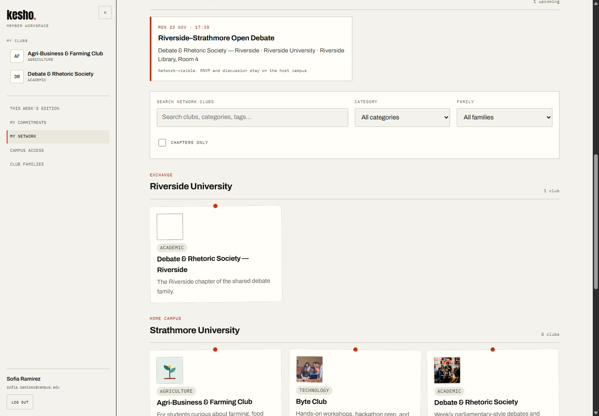
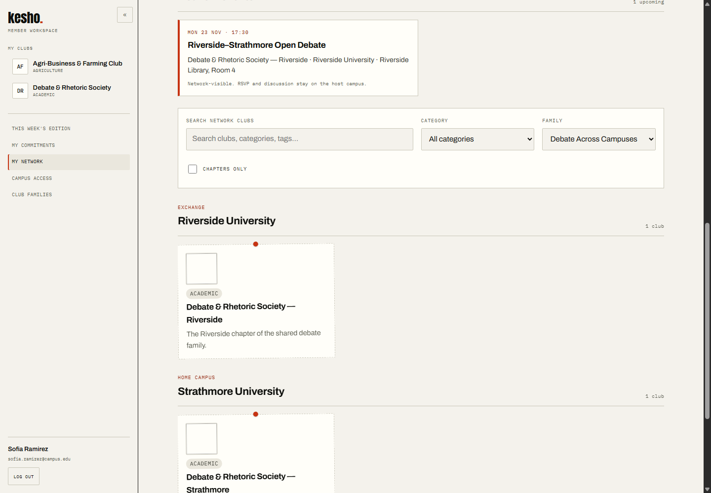

The app, with motion.
These are real screenshots of the running app after the GSAP layer: the Discover edition opening and reading line, and the Network paper filter using Flip. The screenshots are static; open a live page to feel the timing.

The title is set first, then the lead headline, facts and art, then the wire and club rows. A three-pixel reading line tracks the edition without taking over the page. There is no pinning; the DOM is restored when the sequence finishes.

The network header enters once. Notices and commitments are left alone; motion does not compete with the boundary explanation or the reading order.

With the preview fixture loaded: nine club cards across the home campus and the exchange campus. The family filter is the third control in the filter bar.

The two surviving chapters move into their new grid positions while the clipped results stage closes to their height. There is no absolute positioning, no ghost card and no section bleed; the boundary note follows the paper edge.